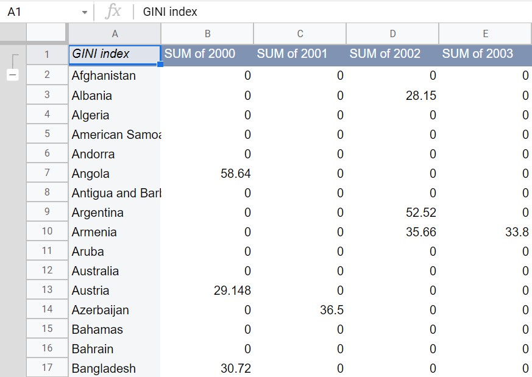
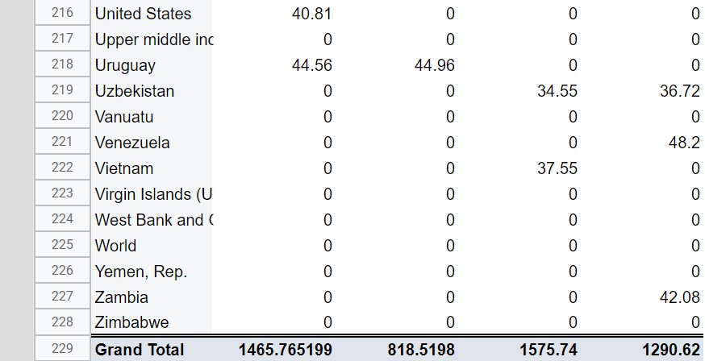
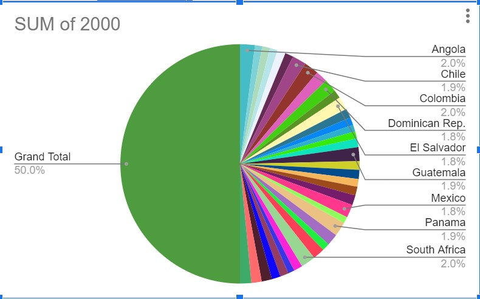
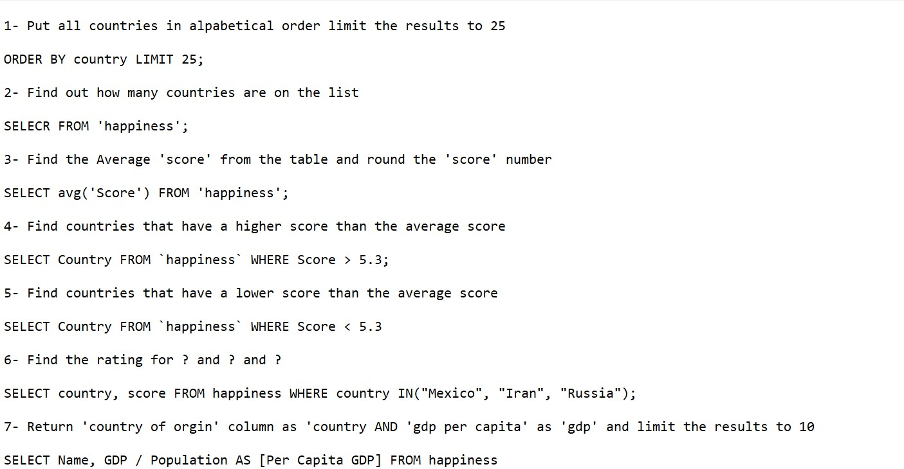

Blog 1
List six major steps that you would take in setting up a database for a particular enterpris
- Define the high level requirements of the enterprise (this step generates a document known as the system requirements specification.)
- Define a model containing all appropriate types of data and data relationships
- Define the integrity constraints on the data
- Define the physical level
- For each known problem to be solved on a regular basis (e.g., tasks to be carried out by clerks or Web users) define a user interface to carry out the task, and write the necessary application programs to implement the user interface
- Create/initialize the database
Blog 2
ER Modeling

Blog 3
There are five types of SQL commands: DDL, DML, DCL, TCL, and DQL.
- DDL- Data Definition Language, describe/define database schema
- DML- Data Manipulation Language, manipulate data records stored within the database table
- DCL- Data Control Language, grants or revokes privileges to users to access parts of the database
- TCL- Transaction Control Language, A single unit of work in a database is formed after the consecutive execution of commands is known as a transaction
- DQL- Data Query Language, perform queries within schema
Blog 4
Gym Fitness databas
The following are the requirements for the Gym Fitness Database:
- For each MEMBER we keep track of the unique MemdID, as well as Name, Zip, and the Date the membership was paid
- For each MEMBERSHIP type we keep track of the unique Mid, as well as MName and Price
- For each PASS CATEGORY we keep track of the unique PassCatID, as well as PCName and Price
- For each ONE DAY PASS we keep track of the unique PassID and Date
- For each MERCHANDISE item we keep track of the unique MrchID, as well as Name and Price
- For each sale TRANSACTION we keep track of the unique Tid and Date
- Each member pays for exactly one membership type; each membership type has at least one member but can have many members
- Each member can buy many day passes but does not have to buy any, each day pass was bought by exactly one member
- Each day pass belongs to exactly one pass category; a pass category can have many individual day passes issued for it but does not have to have any
- Each sale transaction involves exactly one member; each member can be involved in many sale transactions but does not have to be involved in any
- Each merchandise item is sold via at least one sale transaction but it can be sold via many sale transactions; each sale transaction involves at least one merchandise item but can involve many merchandise items
- Every time a merchandise item is sold via a sale transaction, we keep track of the quantity (how many instances of that particular merchandise item were sold via that particular sale transaction)

Blog 5
What is Normalization in relationship to relational databases?
Normalization helps a database designer optimally distribute attributes into tables. The technique eliminates the following:
- Attributes with multiple values
- Doubled or repeated attributes
- Non-descriptive attributes
- Attributes with redundant information
- Attributes created from other features
Database normalization transforms overall database consistency, providing an efficient environment
Blog 6
5 Steps of Data Analysis
- Determining the objective
- Gathering the data
- Cleaning the data
- Interpreting the data
- Sharing the results


Presenting data
Blog 9
Custom Queries
